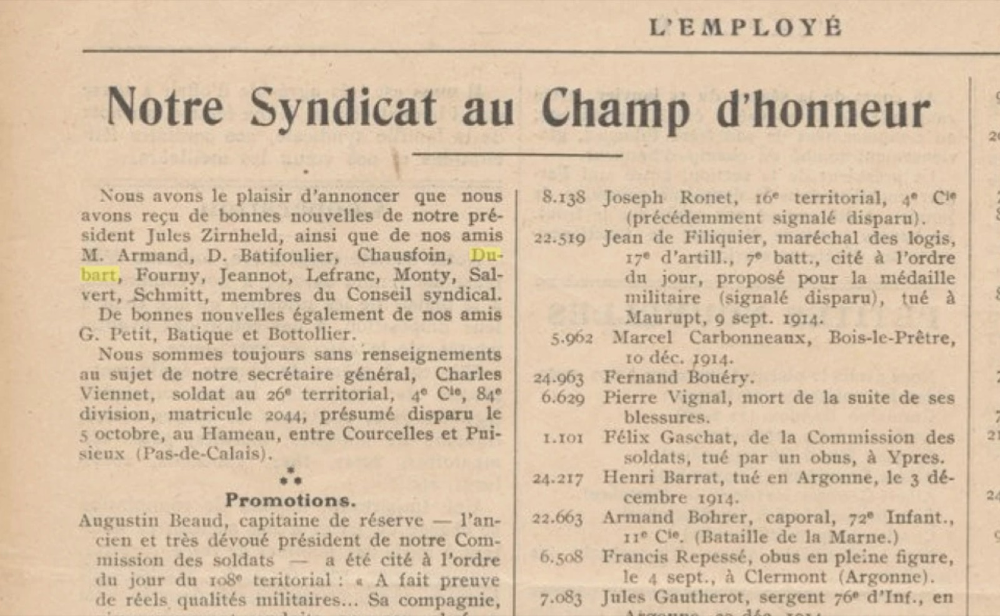

Presse · n° 247 (25e année), numéro double janvier-février 1915 (Gallica : 01/01/1915)
« L'Employé » (Paris), rubrique « Notre Syndicat au Champ d'honneur » (bonnes nouvelles des conseillers mobilisés ; Viennet présumé disparu le 5 octobre ; Promotions ; liste des morts au champ d'honneur)
Ce document établit
- « L'Employé », rubrique « Notre Syndicat au Champ d'honneur » : « Nous avons le plaisir d'annoncer que nous avons reçu de bonnes nouvelles de notre président Jules Zirnheld, ainsi que de nos amis M. Armand, D. Batifoulier, Chausfoin, Dubart, Fourny, Jeannot, Lefranc, Monty, Salvert, Schmitt, membres du Conseil syndical. » non vérifié A0899
« nos amis M. Armand, D. Batifoulier, Chausfoin, Dubart, Fourny, Jeannot, Lefranc, Monty, Salvert, Schmitt, membres du Conseil syndical. » (lecture incertaine : non)
- Contexte de la source (non assertion sur Léon) : en janvier 1915, le Conseil du Syndicat continue de siéger malgré la guerre ; M. Zirnheld remercie « les conseillers restés en fonctions du dévouement avec lequel, depuis le début des hostilités, ils ont assumé la tâche d'entretenir la vie syndicale » ; le secrétaire général Charles Viennet, soldat au 26e territorial, est « présumé disparu le 5 octobre, au Hameau, entre Courcelles et Puisieux (Pas-de-Calais) ». vérifié A0901
« Nous sommes toujours sans renseignements au sujet de notre secrétaire général, Charles Viennet, soldat au 26e territorial, 4e Cie, 84e division, matricule 2044, présumé disparu le 5 octobre, au Hameau, entre Courcelles et Puisieux (Pas-de-Calais). » (lecture incertaine : non)
- Contexte de la source (non assertion sur Léon) : l'en-tête du n° 247 de « L'Employé » (25e année, janvier-février 1915) porte : « Organe mensuel du Syndicat des employés du commerce et de l'industrie et de la Fédération française des Syndicats d'Employés Catholiques — Rédaction et administration : 14 bis, boulevard Poissonnière, Paris-IXe — Téléphone : Central 73-04. » vérifié A0902
« 25e année — N° 247 — Janvier-Février 1915 — L'EMPLOYÉ — Organe mensuel du Syndicat des employés du commerce et de l'industrie et de la Fédération française des Syndicats d'Employés Catholiques — Rédaction et administration : 14 bis, boulevard Poissonnière, Paris-IXe — Téléphone : Central 73-04. » (lecture incertaine : non)
- Selon L'Employé n° 247 (numéro double janvier-février 1915), rubrique « Notre Syndicat au Champ d'honneur », § « Promotions » : « Augustin Beaud, capitaine de réserve — l'ancien et très dévoué président de notre Commission des soldats — a été cité à l'ordre du jour du 108e territorial » ; la suite de la citation est coupée sur la capture. Le texte donne le prénom (Augustin), le grade (capitaine de réserve en 1915) et la qualité d'ancien président de la Commission des soldats du Syndicat. vérifié A0920
« Augustin Beaud, capitaine de réserve — l'ancien et très dévoué président de notre Commission des soldats — a été cité à l'ordre du jour du 108e teritorial : « A fait preuve de réels qualités militaires... Sa compagnie, » (lecture incertaine : non)
- Hypothèse d'identification : l'Augustin Beaud, témoin du mariage de Léon Dubart à Tours le 26/04/1897 (24 ans, négociant, Paris, 15 rue du Sentier ; A0016), pourrait être l'Augustin Beaud, président de la Commission des soldats du Syndicat des employés du commerce et de l'industrie (« M. Beaud » en 1901 et 1906, « lieutenant Beaud » en 1904, « capitaine de réserve » en 1915 ; A0897, A0913, A0917, A0919, A0920). non vérifié A0921
« Augustin Beaud, capitaine de réserve — l'ancien et très dévoué président de notre Commission des soldats » (lecture incertaine : non)
Personnes concernées
Capture de Jessica ; adresse Gallica non relevée. Date du numéro résolue par la capture de l'en-tête (S0496 non créée ; voir enquete.md, « En-tête du numéro de janvier-février 1915 ») : n° 247 (25e année), numéro double janvier-février 1915 (Gallica : 01/01/1915). Voir enquete.md, section « L'Employé, début 1915 ». Fédération : « Syndicats d'Employés Catholiques » selon l'en-tête du journal (la notice Gallica parle de syndicats chrétiens). Siège : 14 bis boulevard Poissonnière, Paris IXe, téléphone Central 73-04 (en-tête).
Continuer
Toutes les archives →Document précédent« L'Employé » (Paris), rubrique « Notre Syndicat au Champ d'honneur — Citations et promotions »1915-03-01 (numéro du 1er mars 1915, notice Gallica cb32766548x)Document suivant« L'Employé » (Paris), procès-verbal du Conseil, séance du 16 janvier 1915 (présidence de M. Baumann)n° 247 (25e année), numéro double janvier-février 1915 (Gallica : 01/01/1915) ; contient le PV du 16 janvier 1915